الصيدلية الإسلامية
بطاقات مصوّرة عن الأغذية والنباتات الواردة في النصوص الإسلامية. اضغط على الصورة أو العنوان لقراءة التفاصيل.
الفواكه والثمار
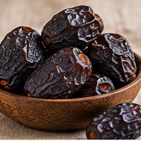
تمر العجوة والتمر
وروده في النصوص
ورد في السنة ذكر تمر العجوة، ومنه حديث صحيح البخاري (5445).
الفوائد الغذائية والعلمية
مصدر للطاقة والألياف والبوتاسيوم، ويحتوي على قدر من الحديد لكنه ليس علاجاً مثبتاً لفقر الدم.
معلومة إضافية
تختلف القيمة الغذائية حسب النوع والكمية. تناوله ضمن غذاء متوازن.
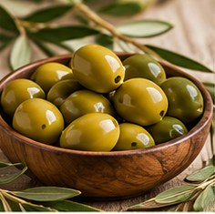
الزيتون
وروده في النصوص
ذُكر الزيتون في القرآن الكريم، ومنها سورة التين (95:1).
الفوائد الغذائية والعلمية
يوفر دهوناً مفيدة ومركبات نباتية مضادة للأكسدة، خصوصاً عند تناوله باعتدال.
معلومة إضافية
لا يوجد دليل كافٍ على أنه يعالج أمراض الكبد.
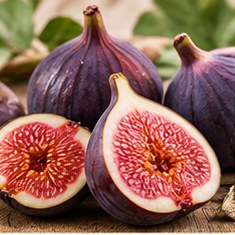
التين
وروده في النصوص
ورد ذكر التين في القرآن الكريم، سورة التين (95:1).
الفوائد الغذائية والعلمية
يحتوي على الألياف التي تدعم انتظام حركة الأمعاء، وبعض المعادن.
معلومة إضافية
ليس علاجاً مضموناً للإمساك الشديد أو هشاشة العظام.
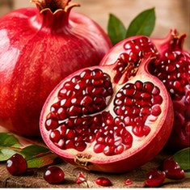
الرمان
وروده في النصوص
ذُكر الرمان في القرآن الكريم، سورة الأنعام (6:99).
الفوائد الغذائية والعلمية
يوفر الألياف والبوليفينولات، ويُدرس أثره على مؤشرات صحة القلب.
معلومة إضافية
لا تثبت الوقاية من النقرس أو حصى الكلى بمجرد تناوله.
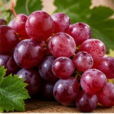
العنب
وروده في النصوص
ورد ذكر العنب في القرآن الكريم، سورة النحل (16:11).
الفوائد الغذائية والعلمية
يوفر الماء والكربوهيدرات ومركبات نباتية، خاصة في القشرة.
معلومة إضافية
لا يُعتمد عليه وحده لخفض الكوليسترول.
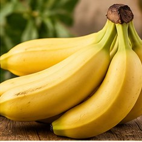
الموز والطلح المنضود
وروده في النصوص
ورد لفظ «طلح منضود» في سورة الواقعة (56:29)، وتفسيره بالموز قول من أقوال المفسرين.
الفوائد الغذائية والعلمية
الموز مصدر للبوتاسيوم والكربوهيدرات، وقد يناسب بعض حالات اضطراب الهضم.
معلومة إضافية
ليس علاجاً للسعال أو أمراض الدماغ.
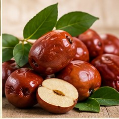
النبق وثمر السدر
وروده في النصوص
ذُكر السدر في القرآن الكريم، ومنها سورة سبأ (34:16)، دون تقرير علاج محدد لثمره.
الفوائد الغذائية والعلمية
ثماره تؤكل في بعض المناطق وتوفر عناصر غذائية تختلف باختلاف النوع.
معلومة إضافية
ادعاءات تطهير الأمعاء تحتاج إلى دليل سريري.
الخضروات والبقوليات والحبوب
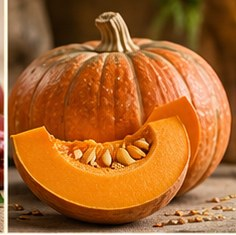
اليقطين والدباء
وروده في النصوص
ورد في صحيح البخاري (5436) أن النبي ﷺ كان يحب الدباء.
الفوائد الغذائية والعلمية
غني بالماء ويحتوي على بيتا كاروتين والألياف، ويساعد ضمن غذاء متنوع.
معلومة إضافية
لا تثبت فاعليته الخاصة في تنشيط خلايا الدماغ.
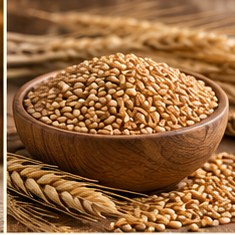
القمح
وروده في النصوص
ذُكرت الحبوب والزروع في القرآن، وورد لفظ «فومها» في البقرة (2:61) مع اختلاف التفسير.
الفوائد الغذائية والعلمية
القمح الكامل مصدر للألياف وفيتامينات ب وبعض المعادن.
معلومة إضافية
تختلف فوائده عن الدقيق الأبيض المكرر.
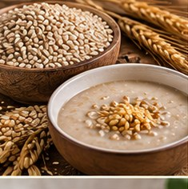
الشعير والتلبينة
وروده في النصوص
ورد ذكر التلبينة في صحيح البخاري (5689) وأنها تُجمّ فؤاد المريض وتذهب ببعض الحزن.
الفوائد الغذائية والعلمية
الشعير مصدر للألياف الذائبة، ومنها بيتا غلوكان، التي تدعم صحة القلب والهضم.
معلومة إضافية
التلبينة طعام مساعد وليست بديلاً لعلاج الاكتئاب.
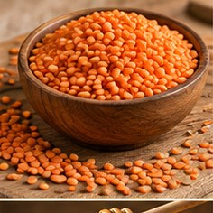
العدس
وروده في النصوص
ورد العدس في سورة البقرة (2:61).
الفوائد الغذائية والعلمية
غني بالبروتين النباتي والألياف والفولات والحديد.
معلومة إضافية
يساهم في تغذية الجسم لكنه لا يعالج كل أنواع فقر الدم.
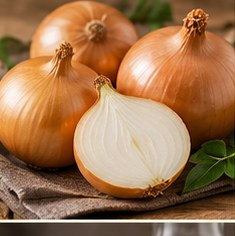
البصل
وروده في النصوص
ورد البصل في سورة البقرة (2:61).
الفوائد الغذائية والعلمية
يوفر مركبات كبريتية وفلافونويدات مثل الكيرسيتين.
معلومة إضافية
لا يوجد دليل كافٍ لوصفه بمنقٍ للدم أو علاج للعدوى.
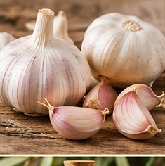
الثوم
وروده في النصوص
ورد الثوم في بعض تفاسير لفظ «فومها» (البقرة 2:61)، وثبت ذكره في أحاديث آداب المسجد.
الفوائد الغذائية والعلمية
يحتوي على مركبات كبريتية، وقد يؤثر بدرجة محدودة على بعض مؤشرات ضغط الدم.
معلومة إضافية
لا يحل محل المضادات الحيوية أو أدوية الضغط.
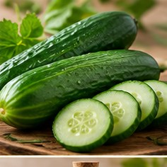
القثاء
وروده في النصوص
ورد في صحيح البخاري (5440) أكل القثاء مع الرطب.
الفوائد الغذائية والعلمية
غني بالماء وقليل السعرات، ويساهم في الترطيب.
معلومة إضافية
القثاء ليس هو بالضرورة الخيار البري.
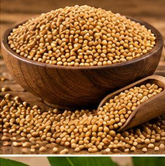
الخردل
وروده في النصوص
ورد ذكر «حبة من خردل» في القرآن الكريم، سورة الأنبياء (21:47)، في سياق الموازين.
الفوائد الغذائية والعلمية
حبوب الخردل تُستخدم غذائياً وتحتوي على مركبات نباتية.
معلومة إضافية
ورود الاسم في النص لا يعني ثبوت علاج محدد.
اللحوم والأغذية الحيوانية والبحرية
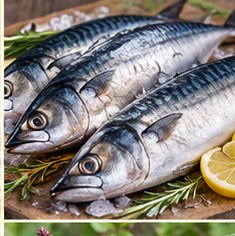
الأسماك
وروده في النصوص
ورد «لحماً طرياً» من البحر في القرآن الكريم، سورة النحل (16:14).
الفوائد الغذائية والعلمية
السمك مصدر للبروتين، وتحتوي بعض الأنواع الدهنية على أحماض أوميغا 3.
معلومة إضافية
الفائدة تعتمد على نوع السمك وطريقة الطهي.
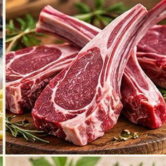
لحوم الأنعام
وروده في النصوص
ورد ذكر الأنعام ومنافعها في القرآن الكريم، سورة النحل (16:5).
الفوائد الغذائية والعلمية
تمد الجسم بالبروتين والحديد وفيتامين ب12، مع اختلاف الدهون حسب القطعة.
معلومة إضافية
لا يثبت تفضيل صحي عام للكتف أو الظهر بسبب سرعة الهضم.
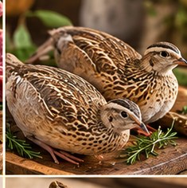
لحوم الطيور والسلوى
وروده في النصوص
ورد ذكر السلوى في سورة البقرة (2:57)، ولحم الطير في الواقعة (56:21).
الفوائد الغذائية والعلمية
مصدر للبروتين وفيتامينات ب، وتتفاوت نسبة الدهون حسب النوع والجلد.
معلومة إضافية
لا توصف جميع الطيور بأنها خالية من الدهون.
السوائل والأشربة والمحسنات
الماء
وروده في النصوص
قال تعالى: «وجعلنا من الماء كل شيء حي» (الأنبياء 21:30).
الفوائد الغذائية والعلمية
ضروري للترطيب وتنظيم حرارة الجسم ووظائف الأعضاء.
معلومة إضافية
تختلف الحاجة اليومية حسب العمر والنشاط والطقس.
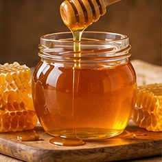
العسل
وروده في النصوص
ورد ذكر العسل في سورة النحل (16:69).
الفوائد الغذائية والعلمية
مصدر للسكريات، وله استعمالات طبية محددة مدعومة بأدلة متفاوتة، ومنها بعض أنواع العسل الطبي للجروح.
معلومة إضافية
لا يُعطى للأطفال دون عمر سنة، ولا يغني عن علاج العدوى.
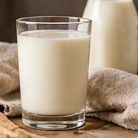
اللبن والحليب
وروده في النصوص
ورد ذكر اللبن في سورة النحل (16:66).
الفوائد الغذائية والعلمية
يوفر البروتين والكالسيوم وفيتامين ب12، وبعض الأنواع مدعمة بفيتامين د.
معلومة إضافية
يُراعى عدم تحمل اللاكتوز أو الحساسية.
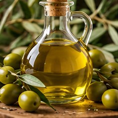
زيت الزيتون
وروده في النصوص
ورد الزيتون في القرآن الكريم، سورة النور (24:35).
الفوائد الغذائية والعلمية
غني بالدهون الأحادية غير المشبعة، واستبداله بالدهون المشبعة يدعم صحة القلب.
معلومة إضافية
تختلف النتائج باختلاف النظام الغذائي الكامل.
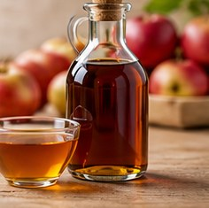
الخل
وروده في النصوص
قال النبي ﷺ «نعم الإدام الخل» رواه مسلم (2052).
الفوائد الغذائية والعلمية
يُستخدم لإضافة النكهة، وتُدرس تأثيراته المحدودة على سكر الدم بعد الوجبات.
معلومة إضافية
ليس علاجاً للسكري، وقد يهيج المعدة والأسنان إذا استُهلك مركزاً.
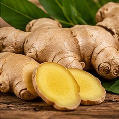
الزنجبيل
وروده في النصوص
ورد الزنجبيل في وصف شراب أهل الجنة، سورة الإنسان (76:17).
الفوائد الغذائية والعلمية
توجد أدلة على فائدة بعض مستحضرات الزنجبيل لتخفيف أنواع من الغثيان.
معلومة إضافية
لا يثبت علاج نزلات البرد والإنفلونزا به.
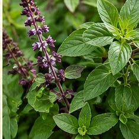
الكافور والريحان
وروده في النصوص
ورد الكافور في سورة الإنسان (76:5)، والريحان في سورة الرحمن (55:12).
الفوائد الغذائية والعلمية
تُستخدم بعض النباتات العطرية في الطعام والعطور، وتختلف آثارها حسب النوع والتحضير.
معلومة إضافية
الكافور المركز قد يكون ساماً عند تناوله، ووروده في وصف الجنة لا يثبت استخدامه كعلاج.
نباتات وردت في السنة
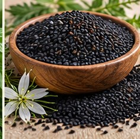
الحبة السوداء
وروده في النصوص
ورد في صحيح البخاري (5688) حديث الحبة السوداء.
الفوائد الغذائية والعلمية
تحتوي على مركبات مثل الثيموكينون، وتوجد دراسات أولية على بعض مؤشرات الصحة.
معلومة إضافية
لا تثبت فعاليتها لعلاج كل الأمراض، ولا تستبدل الأدوية.
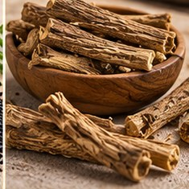
القسط الهندي
وروده في النصوص
ورد ذكر القسط الهندي في صحيح البخاري (5692).
الفوائد الغذائية والعلمية
نبات استُخدم تاريخياً في بعض الممارسات التقليدية، لكن التجارب السريرية الحديثة محدودة.
معلومة إضافية
بعض المنتجات العشبية قد تكون ملوثة أو غير آمنة، فلا يُستخدم لعلاج اللوزتين دون تقييم طبي.